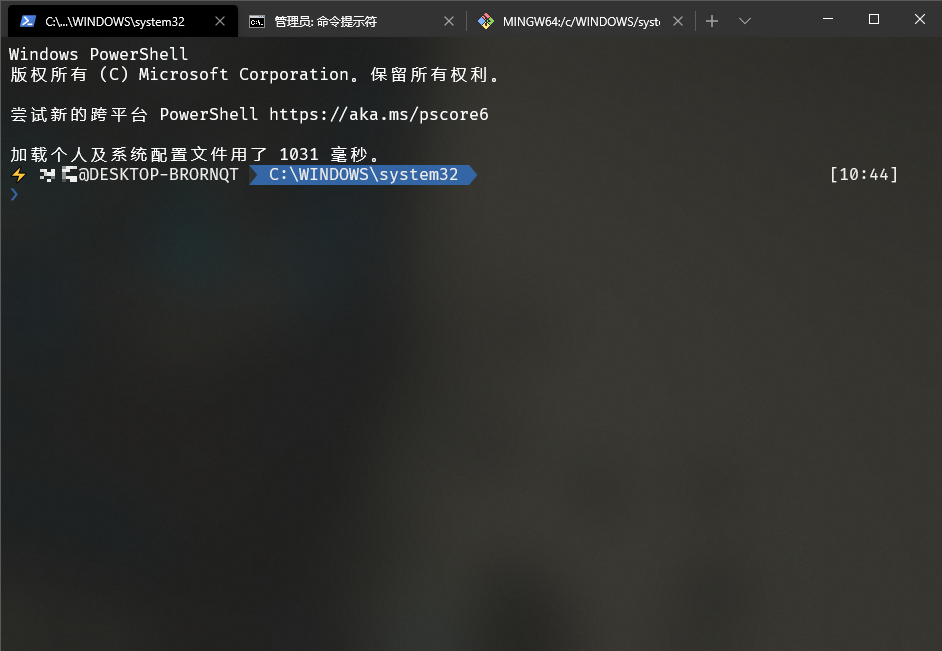
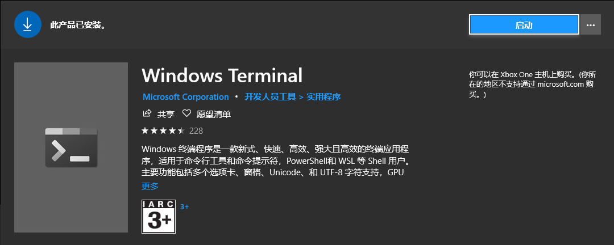
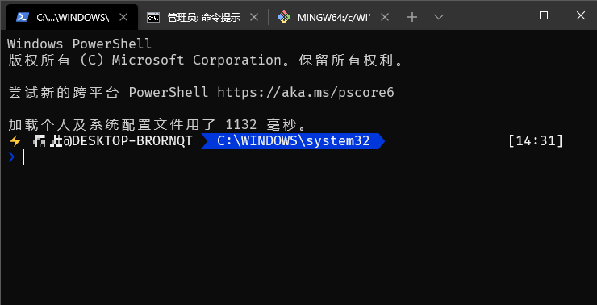
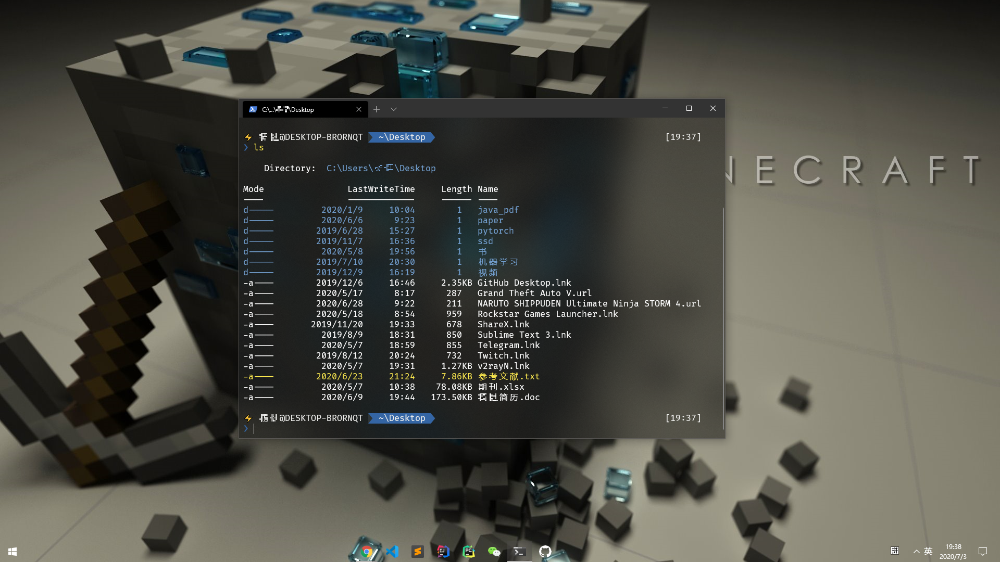
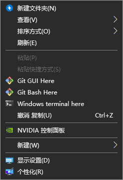
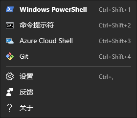

推荐一下Windows自家推出的终端软件😍。
Windows Terminal是微软发布的一款终端（简称WT）。与传统的cmd、Powershell相比，WT对定制的支持更好，同时又支持GPU对页面的渲染、emoji表情、多标签等的特点。项目地址
由于WT的可定制化非常之高，只需要很简单的步骤就可以调节各种界面元素以及操作习惯，所以把它打造成最适合自己的Windows终端程序是完全做得到的。

安装WT
在Microsoft store中搜素Windows Terminal安装即可。

美化配置
安装oh-my-posh
- 安装
scoop
首先在Powershell中输入以下代码来保证允许本地脚本的执行：
然后安装set-executionpolicy remotesigned -scope currentuserscoop：iex (new-object net.webclient).downloadstring('https://get.scoop.sh') - 更换字体
Powerline字体有很多种，这里使用了Fira Code，下载后安装即可。 - 安装
chocoSet-ExecutionPolicy Bypass -Scope Process -Force; iex ((New-Object System.Net.WebClient).DownloadString('https://chocolatey.org/install.ps1')) - 安装
ConEmuchoco install ConEmu - 安装
posh-git、oh-my-posh和Get-ChildItemColor
前两个是oh-my-posh的必备组件，最后一个是美化ls命令的显示效果的插件，可以选装。Install-Module posh-git -Scope CurrentUser Install-Module oh-my-posh -Scope CurrentUser Install-Module -AllowClobber Get-ChildItemColor - 设置
Powershell的profileif (!(Test-Path -Path $PROFILE )) { New-Item -Type File -Path $PROFILE -Force } - 打开上步创建的$PROFILE文件并粘贴以下内容
至此，Import-Module posh-git Import-Module oh-my-posh Import-Module Get-ChildItemColor Set-Theme Paradox # Chocolatey profile $ChocolateyProfile = "$env:ChocolateyInstall\helpers\chocolateyProfile.psm1" if (Test-Path($ChocolateyProfile)) { Import-Module "$ChocolateyProfile" }oh-my-posh的安装就完成了，打开WT的效果如下：

定制settings.json
打开设置，在
defaultProfile中配置默认打开的终端程序。copyOnSelect选择true时可以右击实现复制+粘贴的功能。initialCols和initialRows用于指定初始窗口大小。在
profiles的中，可以单独为不同程序进行自定义设置。首先是毛玻璃效果，这个需要调节两个参数，第一个是把
useAcrylic设置为true，这是必须的，第二个acrylicOpacity则是调节毛玻璃的透明度，取值范围为0-1，0为完全透明，1为完全不透明。fontFace是设置字体，使用的是Fira Code属性，只需要把字体名称填入进去就可以了。如果没有这个字体，则自动替换成Consolas。除此之外还可以调节字体大小，使用的是fontSize属性。background属性可以设置背景颜色，backgroundImage则可以设置背景图片。注意：backgroundImage在毛玻璃特效打开时不起作用。cursorColor用于设置闪动的光标颜色，cursorShape则可以调节光标的样式。commandLine属性的值为命令行程序的路径，如cmd的路径为cmd.exe，Git Bash的路径为/Git/bin/bash.exe等。对应的也可以设置程序的图标和标题名，对应属性为icon和name。关于
colorScheme属性，这个属性用于修改配色方案，默认9种，可以在官网中找到。当然也可以自己定义新的配色方案，在schemes中添加。更多的配色方案可以在此处找到
大功告成，来张效果图：

功能配置
将WT添加到右键
在Powershall中测试以下两个常量是否正常，若没有报错则继续
echo %USERPROFILE% echo %LOCALAPPDATA%在Powshall行中执行以下命令：
mkdir "%USERPROFILE%\AppData\Local\terminal"将windows Terminal图标复制到
%USERPROFILE%\AppData\Local\terminal文件夹中。图片自取：将下列代码复制保存为.reg注册表文件（WT的路径中用户名可能会不同需要修改），然后双击导入注册表即可。
Windows Registry Editor Version 5.00
[HKEY_CLASSES_ROOT\Directory\Background\shell\wt]
@="Windows terminal here"
"Icon"="%USERPROFILE%\\AppData\\Local\\Terminal\\terminal.ico"
[HKEY_CLASSES_ROOT\Directory\Background\shell\wt\command]
@="C:\\Users\\[用户名]\\AppData\\Local\\Microsoft\\WindowsApps\\wt.exe"检查Windows Terminal配置文件中是否有
startingDirectory属性，若没有则将其添加为"startingDirectory": "."若出现错误，可能是用户名为中文导致出错。建议打开注册表编辑器，检查
HKEY_CLASSES_ROOT\Directory\Background\shell\wt\command这个路径下的配置是否和文件配置的一样。效果图：

添加Git
在配置文件的profiles中添加git配置。
{
"acrylicOpacity" : 0.5,
"closeOnExit" : true,
"colorScheme": "DjangoSmooth",
"commandline" : "F:\\software\\GitHub\\Git\\bin\\bash.exe",
"icon": "C:\\software\\Windows Terminal\\git.png",
"cursorColor" : "#FFFFFF",
"cursorShape" : "bar",
"fontFace" : "Fira Code",
"fontSize" : 12,
"historySize" : 9001,
"name" : "Git",
"padding" : "0, 0, 0, 0",
"snapOnInput" : true,
"startingDirectory" : ".",
"useAcrylic" : true
}其中commandline是git的安装路径，icon是图标路径，git图片自取：
效果图：
